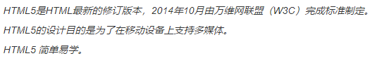
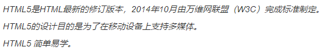
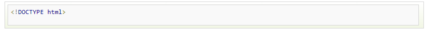
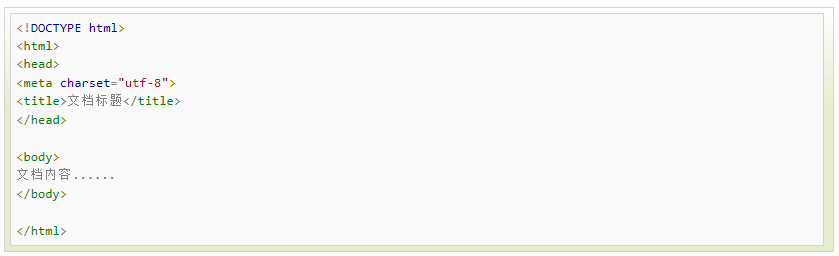

HTML5 是下一代 HTML 标准。
HTML , HTML 4.01的上一个版本诞生于 1999 年。自从那以后，Web 世界已经经历了巨变。
HTML5 仍处于完善之中。然而，大部分现代浏览器已经具备了某些 HTML5 支持。
HTML5 是 W3C 与 WHATWG 合作的结果,WHATWG 指 Web Hypertext Application Technology Working Group。
WHATWG 致力于 web 表单和应用程序，而 W3C 专注于 XHTML 2.0。 在 2006 年，双方决定进行合作，来创建一个新版本的 HTML。
HTML5 中的一些有趣的新特性：
< !doctype> 声明必须位于 HTML5 文档中的第一行,使用非常简单:
下面是一个简单的HTML5文档：
注意： 对于中文网页需要使用 < Meta charset="utf-8" > 声明编码，否则会出现乱码。